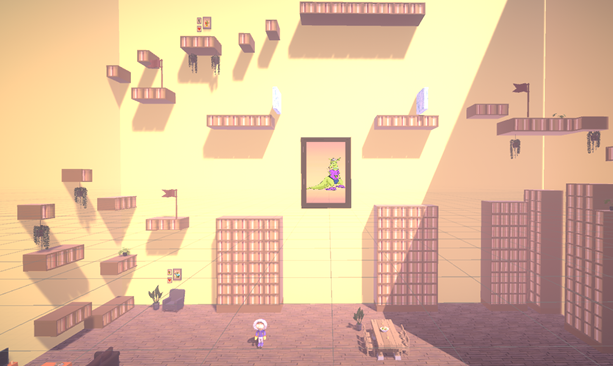
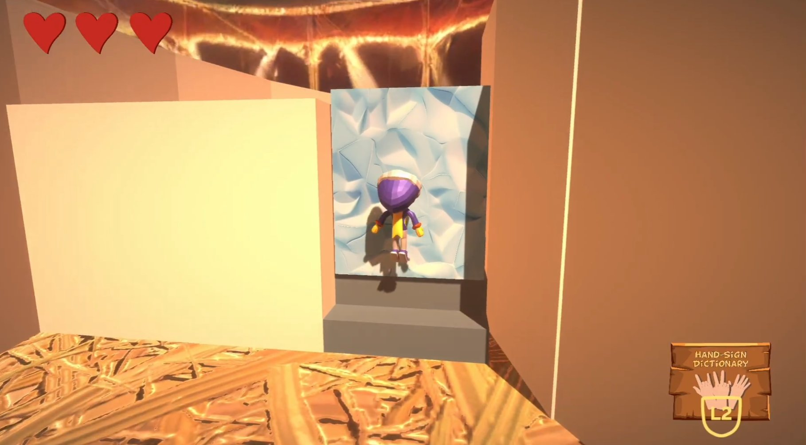

A platformer with computer vision at its core
Nico Nitro is a 3D platform game developed as a Visual Computing project. The game explores how hand recognition can be used as an alternative form of game input.
Players guide Nico through a frozen island across four levels. Traditional controls are used for movement, while hand gestures trigger special abilities such as double jump, dash and smash.


Computer vision
A camera-based system recognises hand gestures and turns them into gameplay input.
Multimodal input
Controller or keyboard input handles movement while gestures control special abilities.
3D platforming
A stylised frozen island provides the setting for the platforming challenges.
Four levels
The game gradually introduces its mechanics and abilities across four playable levels.